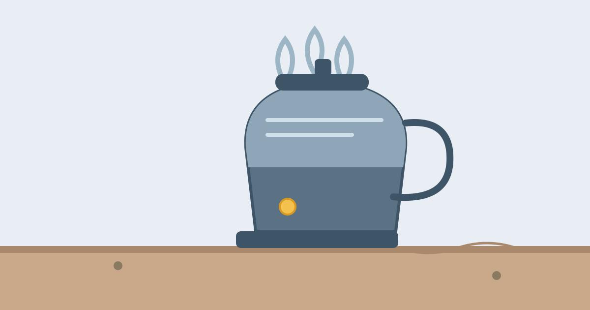

How Does an Electric Kettle Boil Water So Fast?

Fill an electric kettle, flick the switch, and two or three minutes later the water is rolling at a full boil. A pot on the stove takes far longer to do the same job, even though both are doing the same thing: heating water. The kettle's speed is not a trick, and it is not because the water inside it is different. It comes down to three things working together: a very powerful heater, direct contact with the water, and a design that wastes almost no heat.
Understanding why a kettle is fast also explains its other behaviours: why it clicks off by itself, why it slows down as limescale builds up, and why a bigger kettle is not always slower. Once you see the simple physics inside, the little appliance on your counter starts to look like clever engineering.
What's Inside an Electric Kettle
An electric kettle is a simple machine with only a few parts. At the bottom is the heating element, a coil of metal that gets hot when electricity runs through it. In older kettles the coil sits exposed inside the jug, where you can see it. In most modern kettles it is hidden under a flat metal plate at the bottom, which is easier to clean, but the idea is the same.
Above the element is the jug that holds the water, and at the top is a spout, a lid, and a handle. Inside the handle or the base is a switch connected to a small thermostat, and a short pipe or channel carries steam from inside the kettle down to that switch. The base of the kettle holds the electrical connection, and in cordless models the kettle lifts off the base while the heating stays with the jug. There is no pump, no fan, and no complicated machinery: the whole job is done by the element and the switch.
Why the Water Heats So Fast
The first reason is power. A typical electric kettle draws between 2,000 and 3,000 watts, which is more than almost any other appliance in a kitchen. A microwave oven uses around 1,000 watts, and a toaster about the same. That much power pours a large amount of energy into the water every second, so the temperature climbs quickly.
The second reason is contact. The heating element sits directly in the water, or directly under the thin metal floor of the jug, so the heat has almost nowhere else to go. Nearly all the electrical energy turns into heat in the water itself. Compare that with a pot on a stove, where the flame or hot plate heats the pot, the pot heats the water, and a good share of the heat escapes into the air around the pot.
The third reason is the size of the job. A kettle usually holds between one and two litres, and most people boil only what they need. Heating a litre of water from room temperature to boiling takes a fixed amount of energy, and a powerful kettle delivers it fast. The water also helps itself: as the water at the bottom heats up, it rises, and cooler water sinks to take its place, so the whole jug warms evenly.
Why a Kettle Beats a Pot on the Stove
A pot on a gas stove loses a surprising amount of heat. The flame is wider than the pot, so hot air spills around the sides, and the open top lets steam and heat escape freely. An electric hob is better, but the heat still has to travel through the thick base of the pot, and the ring stays hot long after the water boils, wasting energy.
A kettle avoids most of this waste. The heating element is sealed inside, the lid traps the steam, and the narrow jug keeps the hot water in close contact with the heater. Tests of kitchen appliances have repeatedly found that a kettle uses less energy than a stove for the same amount of water, and does it in about half the time. The advantage is biggest for small amounts: boiling one cup in a kettle is quick and cheap, while boiling one cup in a large pot wastes most of the heat.
How the Kettle Knows When to Switch Off
A kettle that kept boiling would soon boil dry and burn out, so every electric kettle has an automatic switch-off. It works with steam, not with a thermometer in the water. As the water reaches a rolling boil, steam rises and is funnelled through a small channel down to a heat-sensitive switch in the handle or base.
That switch contains a bimetallic strip: two thin layers of different metals joined together. The two metals expand at different rates when they get hot, so the strip bends as the steam heats it. At a set temperature the bend is sharp enough to snap the switch open, cutting the power. The click you hear is the strip snapping.
This is also why a kettle sometimes fails to switch off if the lid is left open. With the lid open, the steam escapes before it can reach the switch, and the water keeps boiling without the click. Closing the lid lets the steam do its job.
Why Some Kettles Are Faster Than Others
The biggest factor is wattage. A 3,000-watt kettle will boil the same litre of water noticeably faster than a 2,000-watt one, because it delivers more energy every second. That is why travel kettles, which are built for low-power sockets, take so much longer: they may run at only 1,000 watts.
Limescale is the other great slow-down. In areas with hard water, chalky mineral deposits build up on the element or the base plate, forming a pale crust. That crust acts like insulation, so boiling takes longer and the kettle uses more electricity. Descaling the kettle with vinegar or citric acid removes the crust and restores the speed.
The amount of water matters too. Boiling a full jug takes longer than boiling a single cup, simply because there is more water to heat. Filling the kettle only to the level you need is the fastest and cheapest way to use it, and it is also why many kettles now have a one-cup indicator on the side.
Common Misconceptions
One common belief is that a kettle boils water faster because it uses a special kind of heat. It does not: it uses the same electrical heating as a stove, just delivered more directly and with more power. Another is that reboiling water is dangerous because it concentrates minerals. Reboiling is safe in normal use: the minerals in tap water are far too few for a second boil to matter, though the water may taste flatter because the dissolved air has been driven out. A third is that a kettle uses a huge amount of electricity. It does draw a lot of power, but only for two or three minutes, so the total energy used is small — much less than leaving an oven on for half an hour.
Frequently Asked Questions
Why does my kettle click before the water boils?
The click is the thermostat switching off, and it can happen early if the steam channel is blocked by limescale or if the lid is not closed properly. With the lid open or the channel clogged, the steam does not reach the switch cleanly, so the kettle either keeps boiling or switches off at the wrong time. Descaling and closing the lid usually fix it.
Is it safe to leave water in the kettle overnight?
Yes, it is safe, though the water may taste stale the next day. Standing water can pick up a faint taste from the kettle, and in hard-water areas it leaves more limescale behind. For the best taste, fill the kettle with fresh water each time you use it.
Why does a kettle get quieter as it gets older?
It usually does not get quieter because of age: a new kettle sounds louder because the element is clean and the water heats aggressively, while an older kettle with limescale heats more slowly and bubbles more gently. If a kettle suddenly becomes much quieter, it is often a sign that limescale has built up and it is time to descale.
Conclusion
An electric kettle boils water fast because it combines a powerful heater with direct contact and almost no wasted heat. A 2,000- to 3,000-watt element sits in the water itself, the sealed jug traps the heat, and the water circulates so every part warms evenly. A steam-driven switch then turns it off at exactly the right moment. Keep the kettle descaled, fill only what you need, and close the lid, and it will stay the fastest way to boil water in your kitchen.